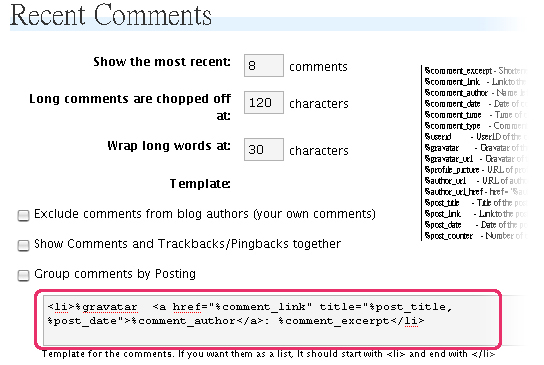
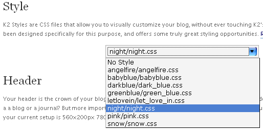

JsTheme v2.2 - Polar Light 's User manual
JsTheme is mostly K2, just with some minor design tweaks here and there. This is my Second time making a wp theme . I am not a programmer, so, there may be many mistakes on this theme, If anybody finds mistakes , please tell me and i will try my best to fix them.
JsTheme v2.0 was named Polar Light, Because it can change many styles in this version. I will make more styles for this theme. You can download more styles here or cerate your own. There are now 9 styles available for Download.
The most important change in this version is that it now work with wordpress 2.2 , uses K2 change style option and wordpress Widgets (I Spent most of the time learning how to make it work as i haven’t made it b4).
Please have a try, and feel free to give me some feedback about it. Thank you very much.
User manaul | Demo Site | Download Skins ( Demo site use deamhost. um…the speed is very slow…..I am looking for a better one)
As I am a junior in using css, the style of this theme may not be good. I test JsTheme v2.0 in firefox, and it look fine, but in IE, it may get some mistakes. eg. can’t display PNG graphic.If anyone knows how to fix this error, Please let me know  . Please have a try and feel free to give me some feedback about it. Thank you very much.
. Please have a try and feel free to give me some feedback about it. Thank you very much.
Change Log & comming up:
21.06.2007
JsTheme v2.1 beta version release
1: 3 Column widgets
2: Add admin"skins" page
3: Fix IE bugs
4: Plugin pack for beginner
17.06.2007
1 : Now support Last f.m Cover
2 : Link change to 4 column (sidebar2) and 3 Column ( sidebar 1) , so that you can slow more link.
3 : Comment text field add icon
4 : Modified css styleand more…
14.06.2007
JsTheme v2.0a alpha version release
Screen:
JsTheme include 1 Default style and 3 addon style :

Features :
Here’s a list of the major features K2/ Js Theme has to offer. Though for those who understand code,I recommend spending a little while to get to know the K2/ JsTheme codebase, it has a few secrets here and there.
- K2 Options Page: Write a blurp about yourself for the frontpage. Choose between traditional or livesearch. Set up the Delicious plugin without editing code. Create an archives page which employs the LiveArchives plugin. Select from dropdown between custom CSS files. This is what the options page does.
- Livesearch: K2/ plainbox comes bundled with an AJAX-powered livesearch solution which works out of the box. No setting up, no code editing, it just works.
- Live Commenting: AJAX-powered commenting; smooth, sexy, cyber. The technology of yester-year right here and now!
- Plugin Support: K2/plainbox has code in place for supporting a wide range of useful plugins. All you have to do is upload and activate the plugins you want to use (pick from the list below).
- Page Menu’s: Ehm… menu’s.
- Page Templates: If you want to have comments on a static page or set up a nice archives page, it’s a little bit easier with plainbox ’s page templates.
- Author Comments Highlighted: What it says. The author of an entry has his comments highlighted.
- Change Style: you can download more styles here or cerate your own
- Content Style:
class="blue"class="yellow"class="pink"class="light"class="dark"
“Heading 1″ Hello, I am heading 1
“Heading 2″ testing
“Heading 3″ Testing
“Heading 4″ testing
“Heading 5″ smaller words
“Heading 6″ Pink in color
“Quote” Quote style
Supported Plugins & Setting:
If you want your Blog look like my demo site, Please install those plugins below :
- Skinner - You must install this plugin if you want the better change skin tools. Provides the ability to apply different skins to a theme By Windy Road.
copy the 'skinner' directory to your wp-contents/plugins directory.
Activate Skinner in your Plugins administration page.
Put The Jstheme's Sin into the Jstheme/skins folder
You will now see the 'Skins' and 'Skin Editor' entries in the 'Presentation' menu.
-
flickrRSS - Allows you to integrate the photos from a flickr rss feed into your site. By Dave Kellam.
Before/After: No Need to set anything -
Get Recent Comment - Display the most recent comments or trackbacks with your own formatting in the sidebar. Visit Options/Recent Comments after activation of the plugin. By Krischan Jodies.

<li><img src="%gravatar_url" align="absmiddle" class="kjgrcGravatar" /><a href="%comment_link"alt="" title="%post_title, %post_date">%comment_author</a>: %comment_excerpt</li>
Recent Comments Setting : - Extended Live Archives - Implements a dynamic archive, inspired by Binary Bonsai and the original Super Archives by Jonas Rabbe. Visit the ELA option panel to initialize the plugin. By Arnaud Froment.
-
Gravatar - This plugin allows you to generate a gravatar URL complete with rating, size, default, and border options. See the documentation for syntax and usage. By Tom Werner.
- Noteworthy - Mark posts as ‘noteworthy’. By Jamie Saunders.
-
Quoter - Allows commenters to quote other comments (dynamically or server side if they have Javascript disabled) and any other text in a page (Javascript only). By Daniele Mancino.
-
Scrobbler - Displays AudioScrobbler / Last.fm webservice information (e.g. recently played tracks), on your blog using AJAXrefreshing(tm) By Florian Kriener.
Format Setting : <li><a href="%track-url%"><span class="date"> %date% | </span> %artist% - %track%</a></li>
Date Format jF -
Ultimate Tag Warrior - Ultimate Tag Warrior is a tagging plugin, that’s heavy on tag visualisation. I Like Pi!
-
Yahoo/MSN Style Smileys - Displays Yahoo Messenger or MSN Messenger style smileys. Please deactivate ‘Convert emoticons like
") and
and  to graphics on display’ under Writing Options menu when using this. By Priyadi Iman Nurcahyo.
to graphics on display’ under Writing Options menu when using this. By Priyadi Iman Nurcahyo.
Installing :
- Make sure you are running WordPress 2.0+.
- Download the latest version of JsTheme above.
- Upload the JsTheme folder to wp-content/themes/ on your server.
- In your WordPress administration, go to Presentation and activate JsTheme.
- Install/Change JsTheme's Style :
1.copy the 'skinner' directory to your wp-contents/plugins directory.
2.Activate Skinner in your Plugins administration page.
3.Put The Jstheme's Sin into the Jstheme/skins folder
4.You will now see the 'Skins' and 'Skin Editor' entries in the 'Presentation' menu.
If you haven't install the skinner plugin, You have to goto presentation/k2 option to change the theme:

- Sidebar Widgets :
That’s it. You’ll find the options panel as a tab called ‘K2 Options’ in the Presentation section of the WordPress administration. After you’re up and running with JsTheme, you can plug in whatever extra functionality you might want.